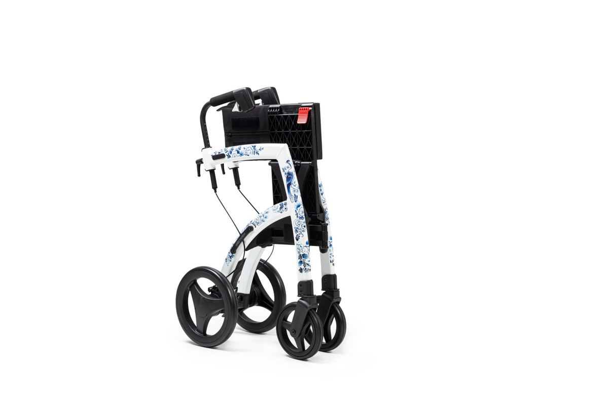

Most home medical equipment falls into three groups when care ends. Rented equipment goes back to the supplier who delivered it, and that call is made first. Purchased equipment is yours to keep, donate or have hauled. Supplies, sharps and leftover medication follow their own rules and never go out in a trash bag.

This is the other side of a job we have written about before. Our post on clearing a room for a hospital bed covers the week before the equipment arrives. This one is about the week after it is no longer needed, which is usually a harder week.
Start by finding out what is actually yours
Before anything moves, sort the room into what belongs to someone else and what belongs to the family. Getting this wrong is expensive, and it is the one step that cannot be undone by a phone call afterward.
Rented equipment is normally the hospital bed, the oxygen concentrator, the patient lift, the alternating pressure mattress, and sometimes the wheelchair. It came from a home medical equipment supplier, it has an asset tag or a sticker on it, and the supplier expects it back. Medicare explains the rent-versus-buy split in its durable medical equipment coverage guidance, and the same logic applies to most private plans.
Purchased equipment is usually the smaller things a family bought out of pocket along the way: the bedside commode, the shower chair, the walker, the transfer bench, the grab bars, the recliner lift chair, the wedge pillows.
Call the supplier before you schedule anything else. They set their own pickup window, and that window decides your timeline, not ours.
Do not let a rented bed leave on our trailer. If a piece has a supplier sticker on it, it stays until that supplier collects it. We will work around anything still waiting on a pickup and take the rest.
What we take, and what we leave alone
Once the supplier's pieces are set aside, the rest is a normal removal job. Hospital beds that were purchased outright, mattresses, lift chairs, walkers, wheelchairs, commodes, shower chairs, over-bed tables, bed rails, transfer boards, and the folding ramp at the back door all come out on a standard run.
The room usually has ordinary furniture in it too, because something had to move out when the bed came in. A dresser went to the garage. A sofa went to a wall it does not fit. Putting that back is furniture removal work as much as it is medical equipment work, and the old mattress that came off the bed is the piece families most often forget to plan for. In Allen we handle that under mattress removal in Allen.
What we do not touch: anything with a supplier tag, oxygen cylinders, and anything with a biohazard label. Oxygen goes back to the company that supplied it, always, and that is not a judgment call.
Sharps, medication and supplies
This is the part that gets handled badly under stress, and it is worth slowing down for. There are three lanes here and a trash bag is not one of them.
Sharps first. Needles, lancets and syringes go into a rigid sharps container, never into household trash and never into the recycling cart. FDA's guidance on safely using sharps at home explains the why plainly: loose needles in a trash bag injure sanitation workers. Its do's and don'ts of sharps disposal page covers where a full container goes, which is usually a pharmacy, a clinic, or a household chemical collection site.
Medication second. Leftover prescriptions, especially controlled ones, go to a take-back location rather than a toilet or a bin. FDA keeps a current page on where and how to dispose of unused medicines, including how to find an authorized collector near you. Many pharmacies keep a drop box near the counter.
Supplies third, and this one is simpler than people expect. Unopened, in-date boxes of gloves, pads, wipes, dressings, gauze, nutrition drinks and incontinence supplies are worth asking about before they are thrown out. Some local organizations take sealed supplies. Opened packages do not get donated anywhere, and those come out with us.
The donation question, honestly
Families almost always ask whether the equipment can help someone else, and the honest answer is that it depends on the piece and it is narrower than you would hope.
Durable items in good condition, walkers, canes, shower chairs, transfer benches, manual wheelchairs, are the ones most likely to find a second home through a local reuse or loan program. Soft goods that touched a body are the ones that do not: mattresses, pressure pads, slings, cushions and anything absorbent.
We are haulers, not a medical equipment clearinghouse, and we will not tell you a piece is going somewhere useful when it is not. Usable items go to local donation partners where they will take them. Everything else goes out as waste, and we would rather say that plainly than dress it up.
If you want to try the donation route, make those calls before you book the removal. Once a crew is in the driveway the decision has already been made.
When the whole house has to be cleared
Sometimes the equipment is the beginning rather than the end of it. The care was at home, the house is now empty, and the family is looking at every room rather than one.
That is a different scale of job and it runs on a different order. Our estate cleanouts page covers how that work is scheduled, and the post on downsizing a parent into assisted living walks through the sorting order that tends to cause the least regret. Little Elm is one of the towns where this comes up, because the older streets near the original town center are full of houses people have lived in for years rather than a season, and our junk removal in Little Elm page has the local detail for that town.
Take the paperwork pass first, before any furniture moves. Insurance records, supplier contracts and medical paperwork have a way of living in the same room as the equipment.
How the job runs
Tell us what is in the room and which pieces are waiting on a supplier pickup. A photo helps, and a photo of the doorway and the hallway helps more, because a hospital bed frame and a lift chair are wide loads inside a house.
A crew looks at what is going and gives you a firm number before anything is lifted. The quote is the bill, and disposal is included. Our own crews do this work, which matters here more than on a curbside pickup, because someone is coming into a room that meant something to your family.
There is no schedule pressure from us on this one. Some families want the room cleared the same week and some need a month. Call before noon and the same afternoon is typical across the northern suburbs, and when you are ready, tell us what you need moved.
Frequently asked questions
Can you take a hospital bed we rented?
No. Rented equipment goes back to the supplier who delivered it. Call them first, and we will take everything that is not theirs.
Do you take oxygen tanks or concentrators?
No. Oxygen equipment goes back to the supplier in every case, whether it was rented or purchased. That is a safety rule, not a preference.
What do we do with leftover needles and medication?
Sharps go in a rigid container and then to a pharmacy or collection site, and medication goes to a take-back box. Neither one goes on our trailer or in a trash bag.
Will you take unopened supplies?
We can haul them, but ask around first. Sealed, in-date supplies are sometimes useful to a local organization, and opened packages are not donatable anywhere.
Can you put the furniture back the way it was?
We clear what is leaving and sweep behind it. Moving your own furniture back into place is not something we do, though we will tell you if something is in the way of the path out.
A room that held a hospital bed for months does not become a bedroom again on its own. The rest of what we haul is on the services page.